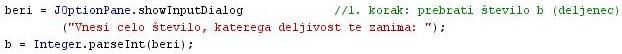
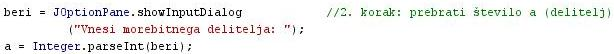
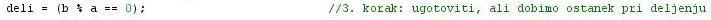
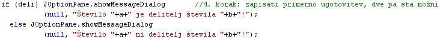
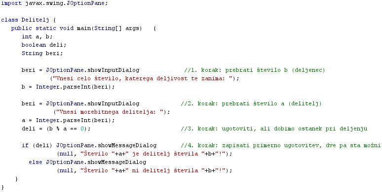

OPREDELITEV ALGORITMA
- Algoritem je postopek, ki v konènem številu enostavnih navodil privede do rešitve zastavljenega problema.
- Algoritem je koraèna procedura reševanja problemov.
- Algoritem je uèinkovita metoda in je seznam natanèno opisanih korakov za izvršitev naloge.
- Algoritem je doloèen s tremi elementi:
- Zaèetno stanje algoritma; to je problemska situacija, s katero smo sooèeni.
- Natanèno doloèeno konèno zaporedje korakov, ki peljejo do rešitve problema.
- Konèno stanje algoritma.
- Pomemben pogoj za algoritem je tudi zahteva, da se mora vedno konèati in ponuditi rezultat.
- Reševanje problemov s pomoèjo algoritmov imenujemo tudi algoritmièno razmišljanje.
- Za algoritmièno razmišljanje je znaèilno:
- sooèenje s problemom ali predstavitev problema
- analiza problema; razmislek o znaèilnostih problema in o možnih rešitvah
- drobitev problema na manjše probleme
- iskanje in oblikovanje rešitev za posamiène manjše probleme - v tej fazi že lahko pišemo posamezne dele programske kode
- sestavljanje delnih rešitev za posamiène manjše probleme v zaporedje korakov, ki privede do rešitve izhodišènega problema - v tej fazi že lahko sestavljamo posamezne dele programske kode v program
- zaporedno izvajanje posameznih korakov reševanja izhodišènega problema - samo en problem na enkrat in ne hkrati veè problemov - v tej fazi programsko kodo že lahko prevedemo in program zaženemo
- Primer:
- Predstavitev problema ali naloge: Napiši program, ki prebere celi števili a in b ter ugotovi, ali je število a delitelj števila b.
- Analiza problema: Vprašamo se, kaj vse bomo morali postoriti za rešitev problema.
- V tem primeru bomo morali prebrati dve števili.
- Nato bomo morali ugotoviti, èe a deli b.
- Iz matematike se spomnimo, da bo a delil b, èe bo ostanek pri deljenju enak 0.
- Zato bomo b delili z a.
- Preverili bomo, èe je ostanek res enak niè.
- Na koncu poskrbimo še za izpis ugotovitve; ali a deli b ali ne.
- Drobitev na manjše probleme: Manjši problemi, ki jih moramo v tem primeru rešiti , so:
- prebrati število b (deljenec)
- prebrati število a (delitelj)
- preveriti, ali je ostanek deljenja b/a res enak 0
- izpisati ugotovitev, ki je odvisna od rezultata deljenja; zato bosta obstojali dve možnosti; zato bo potrebna odloèitev
- Iskanje in oblikovanje rešitev za manjše probleme:
- prebrati število b (deljenec)
- prebrati število a (delitelj)
- preveriti, ali je ostanek deljenja b/a res enak 0
- izpisati ugotovitev, ki je odvisna od rezultata deljenja; zato bosta obstojali dve možnosti; zato bo potrebna odloèitev
- Zaporedno izvajanje posameznih korakov algoritma: zagon programa, ki ga napišemo s pomoèjo algoritma.
VAJA 31:
- V okolju za pisanje izvorne kode v jeziku Java, za prevajanje in za interaktivno delo zapiši program "Delitelj". Pomagaj si s sliko.
- Kodo lahko tudi kopiraš iz te datoteke in jo prilepiš v okolje, v katerem pišeš programèke. Pozor: koda, ki jo boš kopiral/a, vsebuje eno, dve, tri ali štiri napake. Èe želiš, da bo program deloval, moraš napake odkriti in jih odpraviti.
- Izvorno kodo shrani pod imenom "ImePriimek31.java". ImePriimek je seveda tvoje lastno ime in priimek.
- Datoteko "ImePriimek31.java" prevedi.
- Prevedeno datoteko zaženi, preveri rezultat v interaktivnem oknu in poklièi profesorja, da vidi rezultat.
1. Vprašanja:
1. Kaj je algoritem?
2. Kateri trije elementi doloèajo algoritem?
3. Katera je pomembna zahteva za algoritem?
4. Kaj je algoritmièno razmišljanje?
5. Opiši problem, ki smo ga navedli za primer reševanja problemov s pomoèjo algoritma v tej uèni enoti.
6. Naštej manjše probleme, na katere smo razstavili naš zaèetni problem.
7. Katero kjižnico smo uvozili pri pisanju progrma v tej uèni enoti?
8. Katero metodo iz uvožene knjižnice smo uporabili v programu v tej uèni enoti?
9. Kateri primerjalni operator smo uporabili za ugotavljanje deljivosti deljenca z deliteljem?
10. Kateri pogojni stavek smo uporabili za izpis ustreznega sporoèila na koncu izvajanja programa v tej uèni enoti?
2. Zapiši od ene do pet kljuènih besed, ki povzemajo vsebino te uène enote.
3. Povezave do dodatnih informacij.
Gradiva na spletnih straneh fakultete za matematiko in fiziko v Ljubljani - prvi vir.
Gradiva na spletnih straneh fakultete za matematiko in fiziko v Ljubljani - drugi vir.
Angleška verzija Wikipedije
|